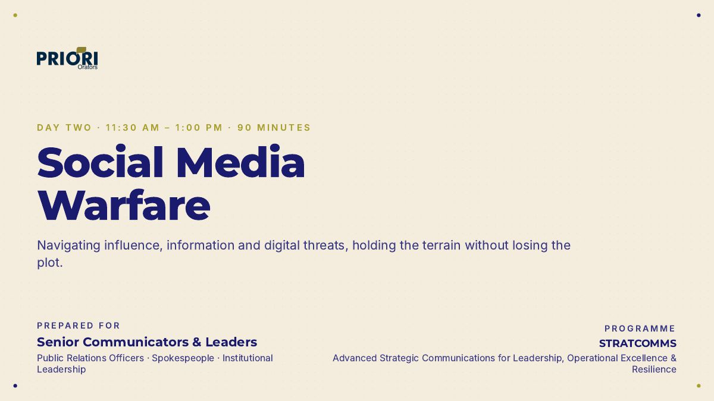

Day 1 · 90 minutes · 29 slides
Strategic Messaging
Clear, aligned messages fitted to the audience, ending in a timed Message House workshop.
I design and deliver strategic communications training for senior communicators, spokespersons and institutional leaders. In 2026 that included sessions for military communications and public relations officers.
Each session is built around one deliverable participants produce under time pressure, not a lecture. Strategic Messaging ends with every table building and pitching a complete Message House. Social Media Warfare stress-tests those messages against an anonymised Nigerian composite case, in which a false claim outran the official correction.
Open the interactive version to see the decks as delivered, timers included, or download the PDF.
Clear, aligned messages fitted to the audience, ending in a timed Message House workshop.

Influence, information threats and AI: holding the terrain without losing the plot.